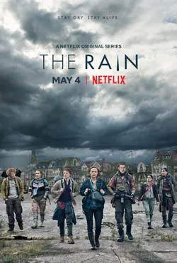

The genetics
The Danish series turns on a virus and the company behind it. Apollon, which built the bunkers and employed the children's father, is implicated in the virus, and the French Wikipedia says the final season reveals it as a biological agent created by the company, though the sources are vague about how. Frederik Andersen, a scientist who believed his son Rasmus held the key to a cure, is an ambiguous figure: flashbacks show the parents arguing over treating the boy's illness with a virus, and another Apollon scientist blames him for her children's deaths. Rasmus, an experimental subject since childhood, carries the link between the plague and its possible cure, and the last season sets destroying the virus against using it. The available sources give few scientific details, so the role of genetic engineering in the story remains unclear.
How genetics is portrayed
- Overall portrayal of genetics
- negative A corporation's biological work lies behind the apocalypse and its scientists are secretive and divisive, though Frederik's aim is a cure.
- Outcome of the genetic intervention
- negative The virus kills almost everyone in Scandinavia, and Rasmus, the experimental child, is hunted as the key to a cure; the threat is neutralised only at great cost.
- Apollon
- villain Aim: not stated (not applicable). The company that built the bunkers is implicated in creating the virus and is associated with the Strangers who hunt survivors; the sources do not give its aims.
- Dr. Frederik Andersen
- ambivalent Aim: benevolent, personal (positive). The Apollon scientist seeks a cure through his son Rasmus, whom he treated with a virus as a child; his children see him as a saviour, while a colleague blames him for her children's deaths.
The story
Six years after a virus carried by rain wiped out almost everyone in Scandinavia, the Danish siblings Simone and Rasmus Andersen leave the bunker where their father, Dr. Frederik Andersen, a scientist for the company Apollon, had left them, telling Simone to protect Rasmus because he is the key to a cure. They join a group of young survivors led by Martin and travel across Denmark and Sweden, evading the Strangers who hunt survivors. A former Apollon doctor who blames their father for her children's deaths traps the siblings and tries to poison Rasmus. In the second season the group searches for Frederik at Apollon's headquarters and learns the truth about the virus and his role in it. In the third and final season they must decide whether to destroy the remaining virus or use it to make a cure; the series ends with the threat neutralised at great cost and the survivors setting out to rebuild.